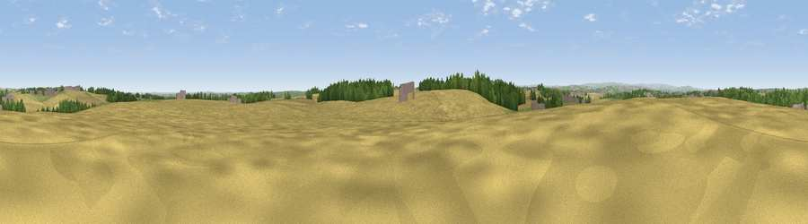

Bull Hill
#29755 in England · top 50% of its area beats it · near Thorpe SalvinThe view, rendered

A 360° render of this exact spot computed from the terrain model, tree cover and land cover — summer colours, afternoon light, calibrated against photographs of famous viewpoints. Real trees, hedges and buildings will differ in detail.
The panorama
Grey silhouette: terrain skyline in each direction (720 bearings, Earth curvature and refraction included). Dashed green: skyline with trees (+15 m) and buildings (+8 m) as obstacles. Blue strip: how far the ground is visible on each bearing.
Where the view opens
Wedge length = distance to the farthest visible ground on that bearing (vegetation-aware). Rings at 10, 25 and 50 km.
What fills the view
70% cropland · 14% woodland · 11% grassland · 5% built-up
Angular shares of the visible panorama (visual magnitude), not map area. Landscape diversity 0.40 (0–1 Shannon).
Key numbers
More beautiful places nearby
The staircase of upgrades: each row has a higher view potential than everything closer. Driving times are estimates from straight-line distance, calibrated against real road routing — check an actual route before setting out.
| Place | Direction | Drive | Score |
|---|---|---|---|
| Fir Hill | SW · 2 km | ~6 min | 50.4 |
| Honey Hills | ENE · 8 km | ~16 min | 51.8 |
| Viewpoint near Treeton | NW · 9 km | ~18 min | 52.8 |
| Viewpoint near Shuttlewood | SSW · 10 km | ~20 min | 53.3 |
| Viewpoint near Ridgeway | W · 11 km | ~21 min | 67.6 |
| Viewpoint near Maltby | NNE · 11 km | ~21 min | 70.8 |
| Viewpoint near Oughtibridge | NW · 22 km | ~37 min | 72.5 |
| Viewpoint near Wharncliffe Side | NW · 24 km | ~40 min | 75.2 |
53.32935, -1.23669 · source: osm peak · position refined by local search. Computed location — check access rights before visiting.